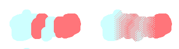
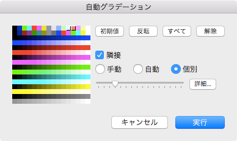
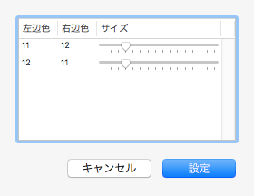
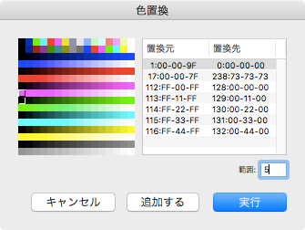
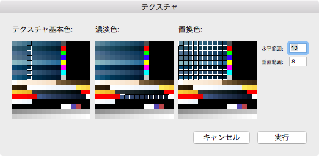

The Selection, within Selection
The Selection, within Selection
When selected on an image, following functions are available:
- Copy, Paste and Delete.
- Copy and Move by dragged(within current image).
- Modify Size(increase and/or decrease).
- Rotate(any angle rotation).
- Flip(horizontal and/or vertical).
- Register Color Pattern.
- Automatic Gradient.
- Replace Color.
- Texuture.
- Clip Image.
The Shape of Selection: either the Rectangle or the FreeStyle
When the  (also, the
(also, the  ) button is shown, the spape of selection is rectangle(oblong or square).
) button is shown, the spape of selection is rectangle(oblong or square).
When the (also, the  ) button is shown, the spape of selection is free style.
) button is shown, the spape of selection is free style.
Selection with painting
With the key, adjacent pixels to start point of which have same color as start point are target of selection shape.
With the & the key, selection shape is increased.
With the & the key, contrast, selection shape is decreased.
As well.
With the & the key, adjacent pixles are target of selection shape, with current color is border: be called the Selection shape with Border.
With the & the & the key, selection shape with border is increaced.
With the & the & the key, contrast, selection shape with border is decreased.
Editing with Selection: Move, Copy and Delete
Within selection shape, a selected image is moved when the main button is dragged.
With the key (or the sub buttom pressed), copy image when the main button is released.
When menu select, an image within selection shape is drawn(painted) with current drawing function.(note that behavior of the Tint is same as the Uniformed Tint.)
Editing with the Handles: Rotation and Resize
When the button is shown, the handle is not appear, which means that rotating and resizing are not avaiable.
When the  botton is shown, the handle is appear which rotating and resizing are available. At this time, each handle are assigned following functions:
botton is shown, the handle is appear which rotating and resizing are available. At this time, each handle are assigned following functions:
- The Corner Handle is Resizing.
- The Side Handle is Rotating.
The Automatic Gradient with tile-pattern(organized dither)
The feature of the Automatic Gradient that between adjacent colors are interpolated by using the tile-pattern(organized dither).

When menu select, then open the Auto-Gradient setting panel.

When the main button is clicked on a whole color listed area, then select a color of targtes.
The slider that specify gradient depth(with), which value can be specified by 1 through 16 (in terms of Dot, 8 dots through 256).
When the "Manual" is indicated, each boundary are drawn by specified slider value.
When the "Auto" is indicated the slider is dislabled, which depth(width) of each boundary are depend on continuous dot length.
When the "Each" is indicated, each depth(witdh) of boundary can be specified with each pair. And, maximum value(boundary depth(width)) is specified by the slider, each value is calculated that are depend on the count of pixels within selected shape. That values(each boundary depth(width)) can set/see on the Detail setting sheet that is opend by clicked the button.

When the "Adjacent" is checked, pair of exactly adjoining pixel value is targeted. So that, if colors of selected are discrete then automatic gradient can be doing.
By default, following conditions satisfied colors is selected:
- Within selection shape.
- No Mask(prohibit overriding)
- No Not use(exclude color)
- No Black(either Red, Green or Blue are not zero)
Replace Color
Replace color value within selection shape by other color value.
When menu is selected, the Replace color setting panel open.

The main button is clicked that specifies source color and the sub button is clicked that specifies destination color, which regiser button is clicked that pair of source-destination register a list of target colors.
If want to specify continuous colors, can specify the value of range on edit box below the color list.
Texture
Mix an image of current layer with an image of immediately below layer.
The current layer represents a gradient, the immediately below layer represents a pattern.
An image of result is store into the current layer.
Following pictures explain before/after applying the texture.(when click image, show full-size.)
{kind=link}
{kind=link}
{kind=link}
To apply the textture, the Texture setting panel open when menu is selected.

The base colors specfies colors that pasting image use colors.(i.e. an image of immediately below layer uses colors.) To specify a range of color, input number on the Vert edit box.
The gradient colors specfies colors that gradient image use colors.(i.e. an image of current layer uses colors.) To specify a range of color, input number on the Hori edit box.
The replaced color specifies colors that uses by the result of mixing image.
Clip Image
Using rectangle selection area, clip image.(Even if selection area is freestyle, clipping always use enclosed it rectangularly.)